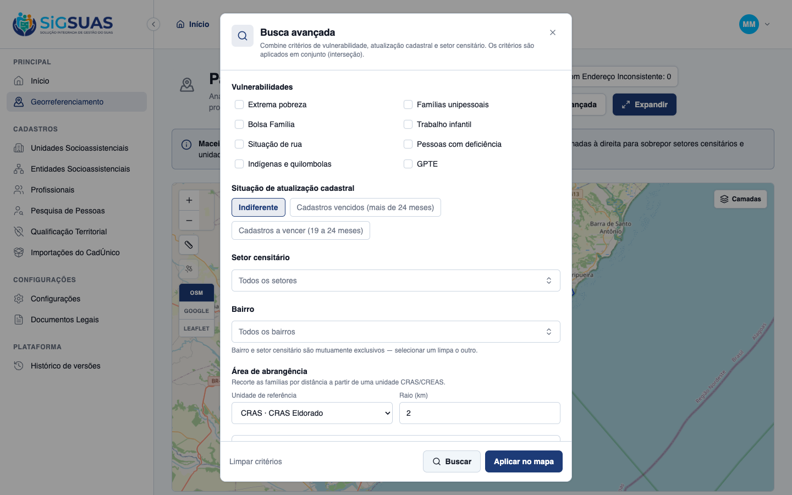
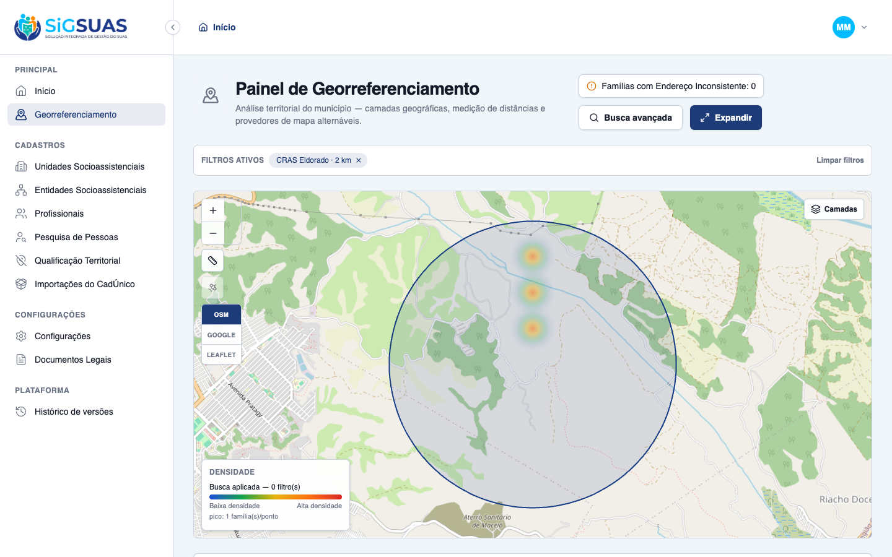
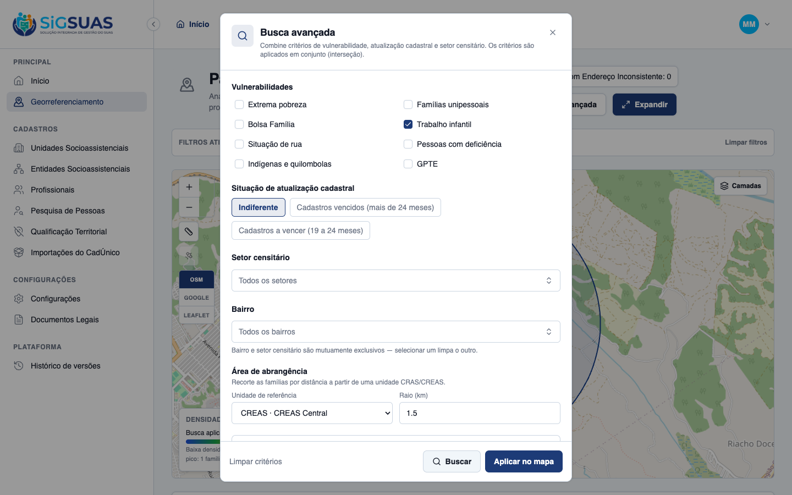
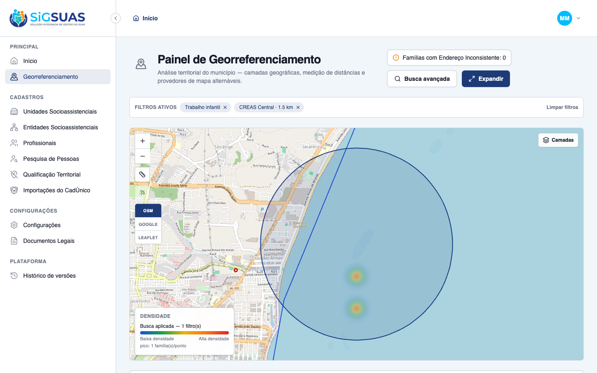
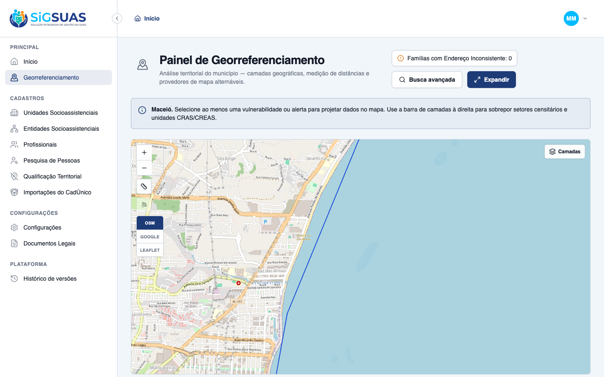

4 critérios de aceite (CA15–CA18) do filtro de raio de atendimento do Painel de Georreferenciamento, todos evidenciados por navegador (playwright-cli) dirigindo o client real contra a API PostGIS não-mock, com dados geo semeados no tenant Maceió (CRAS Eldorado e CREAS Central georreferenciados + famílias posicionadas a distâncias conhecidas, algumas com trabalho infantil). Os totais exibidos na UI (3 famílias em 2 km; 2 famílias com trabalho infantil em 1,5 km) foram cruzados com o resultado do GeoPanelQueryService e com a suíte Pest (48 testes, 144 asserções — apêndice), que exercita o ramo espacial ST_DWithin (PostgreSQL) e o fallback Haversine (SQLite). Resultado geral: 4/4 atendidos.
| CA | Critério | Status |
|---|---|---|
| CA15 | Aplicação do filtro de raio com sucesso | ATENDIDO · navegador |
| CA16 | Desenho gráfico da área de abrangência | ATENDIDO · navegador |
| CA17 | Cruzamento cumulativo (Raio + Vulnerabilidades) | ATENDIDO · navegador |
| CA18 | Limpeza do perímetro radial | ATENDIDO · navegador |
Critério (Gherkin): Dado que estou na modal de Busca Avançada, Quando seleciono o "CRAS Eldorado", informo o valor 2 no campo de raio em KM e clico em "Aplicar no mapa", Então o mapa renderiza as manchas de calor e atualiza o painel lateral considerando apenas as famílias localizadas a até 2 km de distância do CRAS Eldorado.
Como foi testado: Na Busca Avançada, bloco Área de abrangência: selecionar CRAS · CRAS Eldorado na Unidade de referência (o campo Raio habilita), informar 2 em Raio (km) e clicar Buscar. O sistema semeado tem 3 famílias dentro de 2 km e 2 fora.

Critério (Gherkin): Dado que apliquei o filtro de raio de 2 km no CRAS Eldorado, Quando o mapa atualiza, Então o sistema exibe um círculo translúcido delimitando a fronteira de 2 km ao redor do marcador do CRAS Eldorado e ajusta o zoom da tela para enquadrar todo o perímetro.
Como foi testado: Após "Aplicar no mapa" com o raio de 2 km no CRAS Eldorado, observar a camada gráfica desenhada no mapa e o enquadramento automático (fit-bounds).

Critério (Gherkin): Dado que configurei um raio de 1.5 km para o CREAS Central e marquei a vulnerabilidade "Ocorrência de Trabalho Infantil", Quando clico em aplicar, Então o sistema exibe no mapa e no resumo lateral estritamente os casos de trabalho infantil localizados dentro do raio de 1.5 km do CREAS Central.
Como foi testado: Na Busca Avançada: marcar a vulnerabilidade Trabalho infantil, selecionar CREAS · CREAS Central, informar 1.5 em Raio (km) e Buscar/Aplicar. O tenant tem, dentro de 1,5 km do CREAS, 2 famílias com trabalho infantil e 1 sem; e 1 com trabalho infantil a 2 km (fora).


Critério (Gherkin): Dado que há um raio delimitado visível no mapa, Quando abro a Busca Avançada e clico no botão "Limpar critérios", Então a camada do círculo translúcido é removida do mapa e os indicadores voltam a considerar a totalidade do município.
Como foi testado: Com o perímetro de 1,5 km aplicado, abrir a Busca Avançada e clicar Limpar critérios; fechar a busca.

PASS Tests\Feature\Api\Client\GeoPanelTest ✓ it returns the tenant municipality with geometry, centroid and the… 0.35s ✓ it responds 409 geo_panel.city_unavailable when the tenant has no r… 0.03s ✓ it responds 409 when the municipality geometry exists but is inacti… 0.03s ✓ it lists exactly the 3 builtin layers with the stable contract (CA2… 0.04s ✓ it serves the census sectors of the tenant municipality as a GeoJSO… 0.04s ✓ it serves the tenant social units as anonymous points with type_cod… 0.04s ✓ it applies the AND intersection of combined criteria scoped to the… 0.05s ✓ it never leaks families from another tenant in the search (RN01/CA3… 0.04s ✓ it returns an empty payload when no record matches, so the map stay… 0.04s ✓ it rejects a search without any effective criterion (Seção 10 — reg… 0.04s ✓ it rejects a sector_uuid that belongs to another municipality (RN08… 0.04s ✓ it restricts the search to families within the service radius and e… 0.05s ✓ it accepts the radius as the only effective criterion (CA15/RN-C) 0.04s ✓ it intersects the radius cumulatively with a vulnerability filter (… 0.06s ✓ it keeps the legacy contract without radius params — no radius key… 0.05s ✓ it rejects an origin unit without an active location point (422 — R… 0.04s ✓ it requires radius_km and origin_social_unit_uuid together (require… 0.04s ✓ it rejects a radius above the configured max_radius_km ceiling 0.04s ✓ it always includes the fixed RN07 indicator in the summary, even wi… 0.05s ✓ it aggregates the summary by census sector under the active filters… 0.05s ✓ it denies every geo-panel endpoint to the base operator without the… 0.04s ✓ it grants the full panel to the operator once the geo_panel_viewer… 0.05s ✓ it grants the full panel to the Master without any add-on role (RN2… 0.04s ✓ it creates a panel-scoped google map tiles session for the geo_pane… 0.04s ✓ it denies the panel map tiles session to the base operator without… 0.04s ✓ it does not let the geo_panel_viewer role in Tenant A open the pane… 0.04s ✓ it exposes geo_panel_viewer as an add-on role, never a hierarchy po… 0.03s PASS Tests\Feature\TenantIsolation\GeoPanelRadiusIsolationTest ✓ it never resolves an origin unit from another tenant as the radius… 0.02s ✓ it applies an impossible predicate (zero families) when the origin… 0.03s PASS Tests\Unit\Services\Geo\GeoPanelQueryServiceTest ✓ it filters extreme_poverty by per_capita_income against the configu… 0.03s ✓ it filters single_person as exactly one ACTIVE member 0.04s ✓ it filters receives_pbf on the family flag 0.02s ✓ it filters member flags (child_labor, homeless_situation, has_disab… 0.08s ✓ it filters indigenous_quilombola as an OR between the two family fl… 0.03s ✓ it filters gpte by any traditional group, refinable by traditional_… 0.03s ✓ it never counts the "Nenhuma" sentinel group (code 0) as gpte, not… 0.03s ✓ it intersects multiple criteria with AND (RN06) 0.04s ✓ it classifies expired as more than 24 months since source_updated_a… 0.03s ✓ it classifies expiring as between 19 and 24 months since source_upd… 0.03s ✓ it restricts by sector_uuid (SQLite fallback: sector city = family… 0.03s ✓ it aggregates by sector, groups anonymous points and computes the b… 0.03s ✓ it ignores families without an active locatable address point 0.03s ✓ it scopes every aggregate to the given tenant (RN01) 0.03s ✓ it includes families inside the radius and excludes the ones outsid… 0.03s ✓ it yields zero families when the origin unit has no active point (R… 0.02s ✓ it leaves the contract untouched without radius params (no radius k… 0.02s ✓ it validates that an origin unit belongs to the tenant and is locat… 0.02s ✓ it validates that a sector belongs to the tenant municipality (RN08… 0.02s Tests: 48 passed (144 assertions) Duration: 2.10s